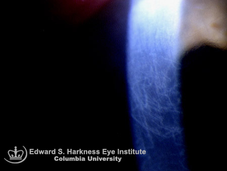

Ghost vessels
* Định nghĩa:
+ Mạch máu ma, có thể thấy ở giác mạc thường do viêm giác mạc nhu mô nguyên nhân do Giang mai

Hình: Những đường màu trắng trên giác mạc là những ghost vessels
(Trích từ trang web của Edward S. Harkness Eye Institute Columbia University)